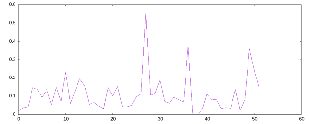
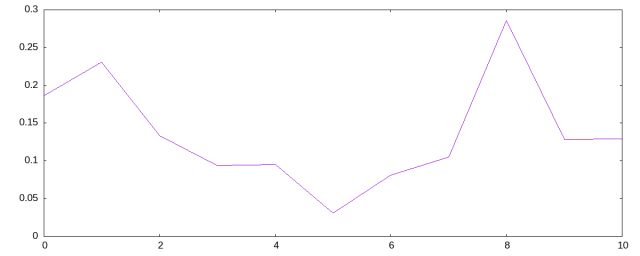
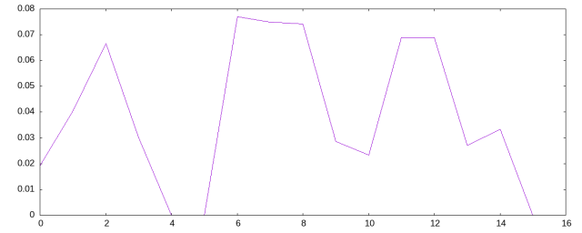
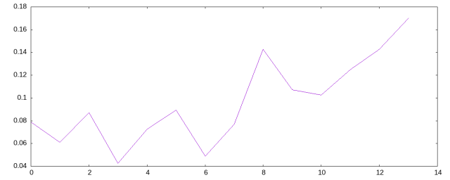

Sometimes, I’d like to go back to my earlier posts and revisit them see if they still hold up, if I can extend them. Today, I am going to revisit such an old post.
In that post, I posited the hypothesis that in oratory speeches the word overlaps between consecutive sentences is an indicator of pace and tension. In a sense, the plot of these overlaps is an EKG of the speech.
Let us start with the namespace:
(ns experiment
(:import [opennlp.tools.sentdetect SentenceModel SentenceDetectorME])
(:import [opennlp.tools.stemmer.snowball SnowballStemmer SnowballStemmer$ALGORITHM])
(:import java.io.File)
(:require [clojure.string :as st]
[clojure.set :as s]))I am going to use Open NLP’s sentence detector and stemmer to process the text into usable tokens. After dividing the text into sentences, I’ll split each sentences into words and then stem them. Then I am going to count the number of common words from one sentence to next.
I need the following function for converting the text into sequence of sentences each of which are sequences of stemmed words.
(let [detector (-> "en-sent.bin" File. SentenceModel. SentenceDetectorME.)
clean #(-> % st/lower-case (st/replace #"[^\s\p{IsLetter}]" " "))]
(defn bag-of-words [big-string]
(->> big-string
(.sentDetect detector)
(map clean)
(map #(->> (st/split % #"\s")
(filter (fn [x] (not (= "" x)))))))))#'experiment/bag-of-wordsThe following function calculates the overlaps. The overlap is the number of common words divided by the total number of words.
(defn overlaps [stemmer sentences]
(let [helper #(into #{} (map stemmer %))]
(map (fn [xs ys i]
(let [x (helper xs)
y (helper ys)]
{:sentence (st/join " " ys)
:position i
:overlap (/ (count (s/intersection x y))
(count (s/union x y))
1.0)}))
sentences
(rest sentences)
(range))))#'experiment/overlapsI am going to export the results into a CSV to plot it via gnuplot:
(defn write-csv [stemmer in-file out-file]
(let [data (->> in-file slurp bag-of-words (overlaps stemmer))]
(with-open [out (clojure.java.io/writer out-file)]
(doseq [x data]
(.write out (str (:position x) ", " (:overlap x) "\n"))))
(->> data (sort-by :overlap) reverse)))#'experiment/write-csvI am going to need a stemmer for English and another for Turkish:
(let [st (SnowballStemmer. SnowballStemmer$ALGORITHM/TURKISH)]
(defn ts [x] (.stem st x)))
(let [st (SnowballStemmer. SnowballStemmer$ALGORITHM/ENGLISH)]
(defn es [x] (.stem st x)))#'experiment/ts
#'experiment/esMy first experiment is on Kennedy’s first inaguration speech
(->> (write-csv es "kennedy-inaguration.txt" "kennedy.csv")
(sort-by :overlap)
reverse
(take 3)
(into []))[{:sentence "but let us never fear to negotiate", :position 27, :overlap 0.5555555555555556} {:sentence "nor will it be finished in the first one thousand days nor in the life of this administration nor even perhaps in our lifetime on this planet", :position 36, :overlap 0.375} {:sentence "my fellow citizens of the world ask not what america will do for you but what together we can do for the freedom of man", :position 49, :overlap 0.36}]
Next, Lincoln’s Gettysburg address.
(->> (write-csv es "lincoln-gettysburg.txt" "lincoln.csv")
(sort-by :overlap)
reverse
(take 3)
(into []))[{:sentence "it is rather for us to be here dedicated to the great task remaining before us that from these honored dead we take increased devotion to that cause for which they gave the last full measure of devotion", :position 8, :overlap 0.2857142857142857} {:sentence "we are met on a great battlefield of that war", :position 1, :overlap 0.2307692307692308} {:sentence "now we are engaged in a great civil war testing whether that nation or any nation so conceived and so dedicated can long endure", :position 0, :overlap 0.186046511627907}]
My new experiments are Atatürk’s first and second presidency acceptance speeches.
(->> (write-csv ts "ataturk-first-inaguration.txt" "ataturk1.csv")
(sort-by :overlap)
reverse
(take 3)
(into []))[{:sentence "son senelerde milletimizin fiilen gösterdiği kabiliyet istidat idrak kendi hakkında suizanda bulunanların ne kadar gafil ve ne kadar tetkikten uzak zevahirperest insanlar olduğunu pek güzel ispat etti", :position 6, :overlap 0.07692307692307691} {:sentence "milletimiz haiz olduğu evsaf ve liyakatini hükûmetinin yeni ismiyle cihan ı medeniyete daha çok suhuletle izhara muvaffak olacaktır", :position 7, :overlap 0.075} {:sentence "türkiye cumhuriyeti cihanda işgal ettiği mevkiye layık olduğunu asarıyla ispat edecektir", :position 8, :overlap 0.07407407407407407}]
(->> (write-csv ts "ataturk-second-inaguration.txt" "ataturk2.csv")
(sort-by :overlap)
reverse
(take 3)
(into []))[{:sentence "istikbale nazarlarımız bu itimat ile müteveccih olduğu halde büyük millet meclisi nin muhterem azasını selamlar ve naçiz bir ferdi olmakla mağrur bulunduğum büyük türk milletine saadetler ve ona hepimiz için güzide ve meşkûr hizmetler temenni ederim", :position 13, :overlap 0.1702127659574468} {:sentence "cumhuriyetin mevcudiyet ve rasanetini ve milletin âli menafiini dahili ve harici herhangi bir kasta karşı her an müdafaaya hazır bulunarak hariçte dostluklara ve sulhcuyane mesaiye müzahir ve vefakâr ve dahilde vatandaşların emn ü asayiş içinde gayret ve inkişafına hadim olmak yeni faaliyet devresinden dahi beklediğimiz asıl gayedir", :position 8, :overlap 0.1428571428571429} {:sentence "üçüncü büyük millet meclisi nin faaliyet devresi hamiyet ve himmetinizle türk milletinin layık ve müstait olduğu faaliyetin yüksek bir merhalesini daha tahakkuk ettireceğine sarsılmaz itimadımız vardır", :position 12, :overlap 0.1428571428571429}]